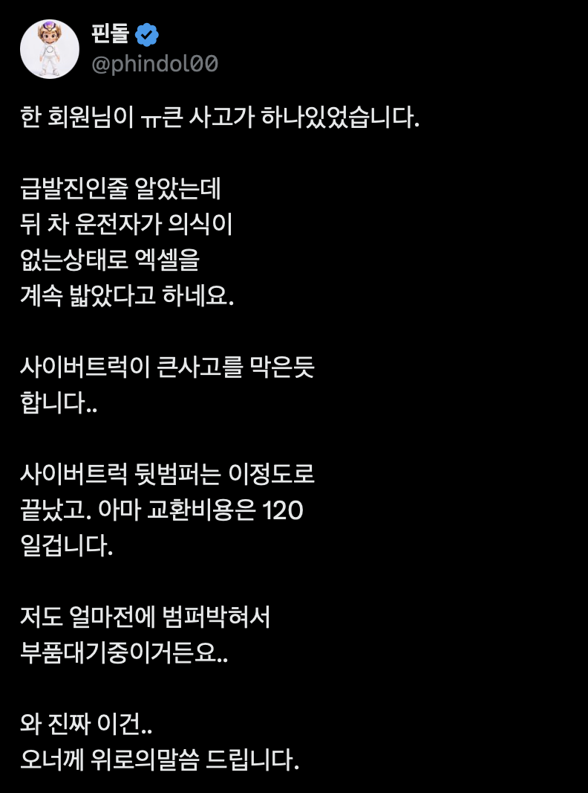
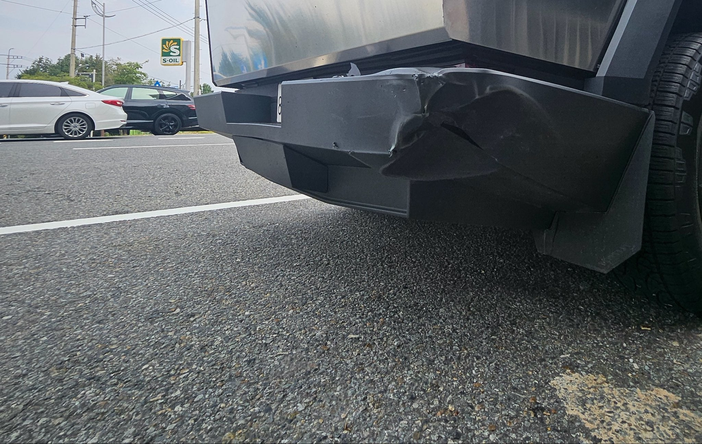

의식잃고 풀악셀 ㄷㄷ


의식잃고 풀악셀 ㄷㄷ
사트는 걍 트럭이라서
아니 저거 조수석 창문 부숴서 문열고 운전자 꺼내야하는거 아닌가?
저래도 차 안 작살나나?
톤톤톤이였군
카니발은 엔진이..
존나 든든하네
운전자 꺼내려고 창 깨고 문 열면 처벌받음?
ㄴㄴ
근데 그럴 필요는 없음. 시동만 꺼주면 됨
근데 꿈쩍도 안하네 ㅋㅋㅋ
만근추
그래도 범퍼만 다쳐서 다행이네
이게 렉카구나
저게 견적 120이라고? 비야디면 500스타트였는데
근데 카니발처럼 큰 차가 뒤에서 박았는데, 정지한상태로 그거 다 받은거면 범퍼 떠나서 차축이나 이런데에 데미지 누적 안됨?
빈 렉카는 그냥 갔고 운반중이던 렉카가 도와줌